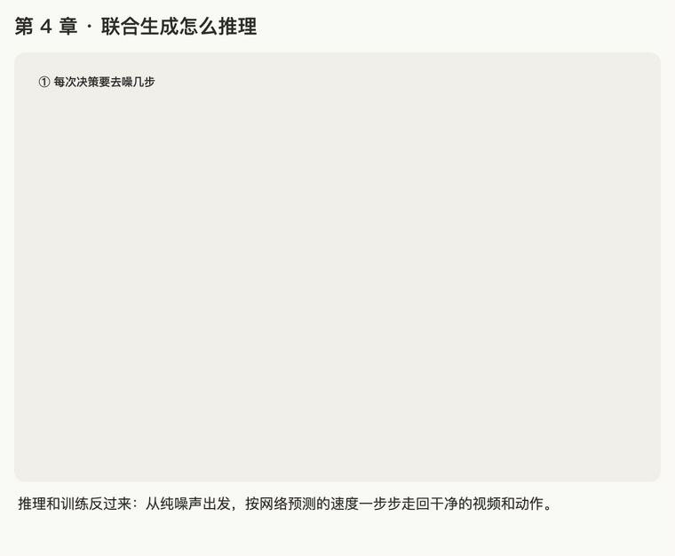

第 4 章 · 联合生成怎么推理：少走几步、丢掉视频、用现实重新锚定
本章回答：联合生成的 WAM 部署时一次决策要做哪些事？为什么能把视频丢掉？为什么要用真实观测替换预测的画面？它到底比 VLA 慢多少？
讲解日期：2026-11-20 · 上一章：第 3 章 联合生成怎么训练 · 下一章：第 5 章 推理时还要想象吗
对应原文：调研报告 §3 P3"推理（以 DreamZero 为例，Algorithm 2）"、§6 推理细节
本章缩写：KV = Key / Value（键 / 值，attention 里被查询的那一方）；DiT = Diffusion Transformer（扩散 / Transformer）；CFG = Classifier-Free Guidance（无分类器 / 引导）；VAE = Variational AutoEncoder（变分 / 自编码器）；GPU = Graphics Processing Unit（图形 / 处理 / 单元）；NVFP4 = NVIDIA 4-bit Floating Point（NVIDIA 的 4 位浮点格式）。全部缩写见 附录 · 缩写与术语表
讲解
第一步：推理就是把训练反过来走（2026-11-20）
类比：擦雾。 训练时学会了"雾是从哪个方向盖上来的"（第 3 章）；推理时拿一块全是雾的玻璃（纯噪声），按学到的方向一点点擦，擦几下就看清了。
DreamZero 一次决策（调研报告 §3 P3，Algorithm 2）：
- 当前观测 + 指令编码成条件 \(c\)；视频 latent 和动作都初始化成纯噪声（\(\tau=1\)）；
- 联合去噪：每一步网络预测速度，\(x\leftarrow x-\Delta\tau\cdot u_\theta\)，\(\tau\) 从 1 走到 0；
- 得到干净的动作块和视频 latent；
- 只执行动作，视频 latent 丢掉。
一句话：从纯噪声出发，按预测的速度往回走，走到底就是动作。
第二步：步数决定速度（2026-11-20）
每走一步，就是 14B 网络的一次完整前向，所以步数直接决定延迟：
| 做法 | 步数 | 怎么省的 |
|---|---|---|
| 朴素版 | 16 | — |
| DiT caching | 约 4 | 相邻两步预测的速度很像，就复用上一步的 |
| Flash 版 | 1 | 训练时让视频的 \(\tau\) 偏向低噪声，推理一步到位 |
再叠上工程手段（CFG 并行、torch.compile + CUDA Graphs、NVFP4 量化），DreamZero 的延迟从 5.7 s 降到约 150 ms，\(5.7/0.15=38\) 倍，在 2 块 GB200 上做到 7 Hz 闭环控制。
一句话：步数 × 一次前向的代价 = 延迟，两头都要压。
第三步：为什么视频可以丢（2026-11-20）
机器人只需要动作。视频 latent 已经在去噪过程中和动作互相"商量"过了（attention 里互相看），它的作用已经发挥完。
丢掉省的是：不跑 VAE 解码器，不把 latent 还原成像素。UVA、DreamZero、Cosmos 3 Policy-DROID 都这么做。
但要注意：视频 latent 还是要去噪的，几千个 token 每步都要算，所以 P3 仍然比 VLA 慢。第 5、6 章讲的就是怎么把这一块也省掉。
想调试的时候，可以选择性地把 latent 解码出来看"它以为会发生什么"，这是 WAM 相对 VLA 的调试优势（调研报告 §6）。
一句话：视频陪动作商量完就退场，不解码，但去噪的钱省不掉。
第四步：用真实观测重新锚定（2026-11-20）
类比：闭着眼走路 vs 每走几步睁一次眼。 闭眼一直走，每一步的小偏差会累积，几十步后就撞墙；每走几步睁眼看一下，偏差就被清零。
第 3 章说过，训练时前面的块用真实的干净帧当条件（teacher forcing）。推理时如果拿模型自己预测的帧当后面的条件，就和训练不一致，误差一块块累积，这叫 compounding error（复合误差），也叫 exposure bias（暴露偏差）。
DreamZero 的做法：执行完一块动作，相机拍到真实画面，用它的 VAE 编码替换 KV cache 里对应的预测帧。下一块以真实画面为条件，等于每块都睁一次眼。
其他流派对付同一个问题的办法（调研报告 §4 第 5 条）：V-JEPA 2-AC 训练时加 rollout loss、GameNGen 给条件帧加噪、MPC 每步重规划。
一句话：预测的画面只活一块，执行完就换成真的。
第五步：异步执行和平滑，以及和 VLA 比（2026-11-20）
- 异步：机器人执行当前动作块的同时，GPU 已经在算下一块，两者重叠；
- 平滑：相邻两块的接缝处可能跳一下，用 Savitzky-Golay 滤波（一种保形的滑动多项式平滑）把动作块磨平。
和纯 VLA 比（调研报告 §6）：
| 一次决策 | 频率 | 硬件 | |
|---|---|---|---|
| π0（VLA） | 一次前向出 50 步动作 | 最高 50 Hz | 消费级 GPU 20 Hz 以上 |
| DreamZero（P3） | 多步联合去噪 | 7 Hz（约 150 ms） | 2 块 GB200 |
7 Hz 意味着每次决策约 \(1/7\approx143\) ms；50 Hz 是 20 ms。这就是 WAM 在速度上要追的基线。
一句话：边执行边算下一块，接缝要磨平；离 VLA 的速度还差一个数量级。
动画演示：少走几步，每块换成真的

可交互版：animations/04-joint-inference.html（打开自动循环播放；点任一按钮切成手动）
怎么看：
- 上半部分三行：16 步 → 4 步 → 1 步，以及 5.7 s → 150 ms（第二步）。
- 下半部分：紫色虚线是预测帧，执行完变成绿色实线的真实帧（第四步）。
- 底部说明：视频不解码，执行和计算重叠（第三、五步）。
练习与作答记录
题 1（第四步）：如果不做"用真实观测替换"，一直用自己预测的帧往后想 20 块，你预计会出什么问题？举一个叠衣服时可能的具体失败。
作答：（待作答）
题 2（第二步）：某模型一次前向 40 ms，朴素去噪 16 步。用 DiT caching 降到 4 步后，一次决策大约多少毫秒？对应多少 Hz？（只算去噪，不算其他开销。）
作答：（待作答）
题 3（第三步，拓展）：既然视频最后要丢掉，为什么不干脆训练时也不要视频？（提示：第 5 章会用实验回答这个问题，先凭直觉猜。）
作答：（待作答）
口诀
纯噪出发往回擦，步数乘前向就是延迟；
视频陪聊不解码，动作才交给机器人；
执行一块睁次眼，预测换成真画面。
本章复习卡片
C05 DreamZero 推理时为什么用真实观测替换 KV cache 里的预测帧。练习做完后，按答错、卡住的地方补上。
附录 · 延伸阅读
推荐阅读
| 读什么 | 读哪里 | 读它为了什么 |
|---|---|---|
| ★ DreamZero（arXiv 2602.15922） | Algorithm 2 和推理加速一节 | 本章每一步的出处 |
| ★ 调研报告 | §6 推理过程的四种模式 | 和其他流派的推理放在一起比 |
| π0 的实时分块执行（RTC） | vla-deep-dive 讲义 | 异步执行在 VLA 里的做法 |
| Self Forcing / Diffusion Forcing | 引言 | 从训练端解决 exposure bias 的另一条路 |
数学原理
- 欧拉法：\(x\leftarrow x-\Delta\tau\cdot u_\theta\) 是解常微分方程最简单的一步法，步数越少，每步越大，越依赖网络把速度预测准。
- 复合误差：每步有小误差 \(\delta\)，用自己的输出当下一步输入，\(k\) 步后的偏差大致随 \(k\) 增长甚至放大。
公式清单
| 公式 | 意思 |
|---|---|
| \(x\leftarrow x-\Delta\tau\,u_\theta(x,c)\) | 去噪一步 |
| 延迟 ≈ 步数 × 一次前向 | 去噪部分的延迟估算 |
| 频率 = 1 / 每次决策的时间 | 7 Hz ↔ 约 143 ms |
本章无代码对照。